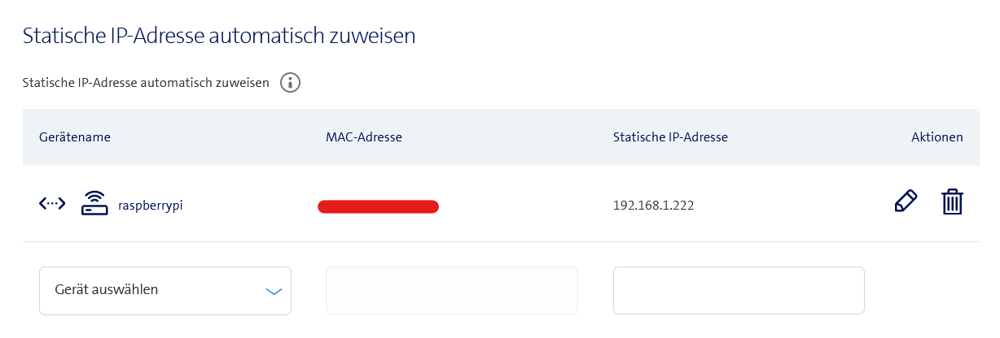
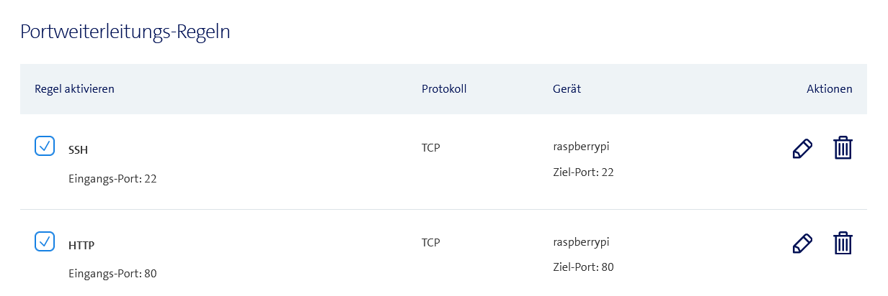
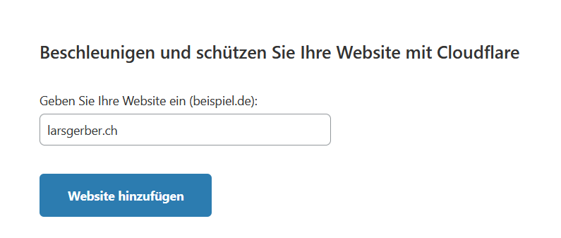
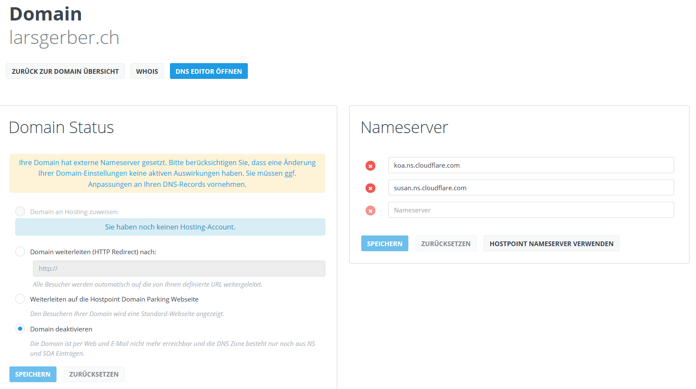
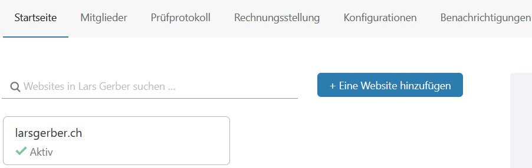
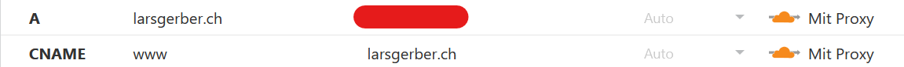
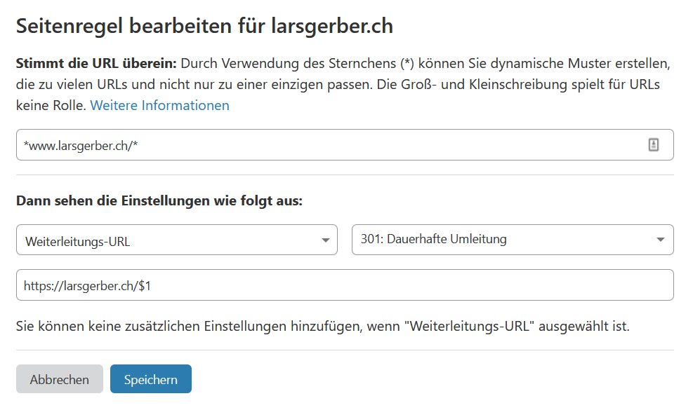
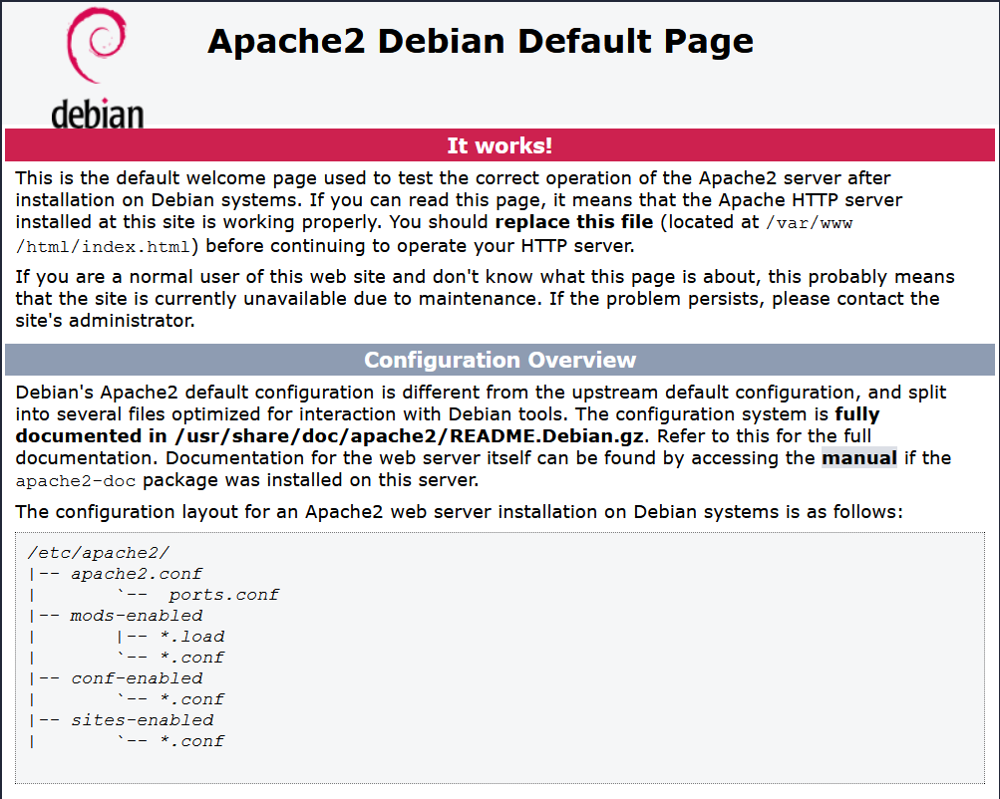
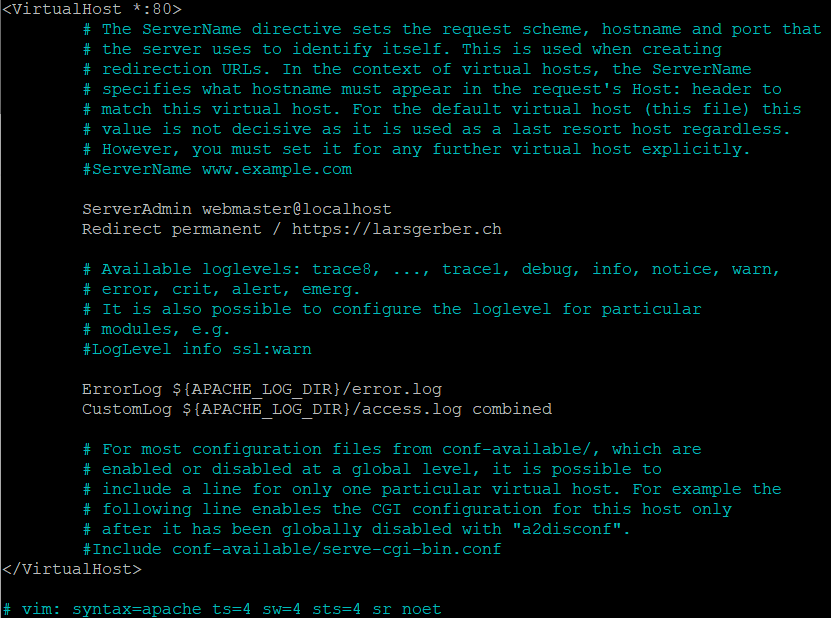

how to setup a webserver
with a Raspberry Pi 4
Ich habe viele Blogs und Videos geschaut, wo erklärt wird, wie man einen Raspberry Pi 4 als lokalen
Webserver im eigenen Netzwerk einsetzt. Aber was bringt es einem, einen Webserver zu haben, welcher
keine Domain hat und somit auch nicht leicht über das Internet erreichbar ist. In diesem Blog werde ich
dir Schritt für Schritt erklären, wie ich es gemacht habe. Falls du dich wunderst. Meine Seite, auf
welcher du gerade bist, läuft auf meinem Raspberry Pi 4 in meinem Zimmer. Sei mir also nicht böse, falls
die Seite manchmal etwas länger hat um zu laden. Unten kannst du die Quicklinks benutzen um schnell zu
deinem gewünschten Thema zu gelangen. Bei Fragen oder Verbesserungsvorschlägen, kannst du mich gerne
über das Formular auf der Seite «Contact» kontaktieren.
Quicklinks:
- Was du brauchts
- RasPi in Betrieb nehmen
- Rooter konfigurieren
- Domain kaufen und konfigurieren
- Cloudflare konfigurieren
- RasPi updaten
- Apache installieren
- Apache konfigurieren
Was du brauchts
Als erstes brauchts du einen Raspberry Pi 4. Am besten 4GB Ram für die beste Performance. Wenn du noch einen alten zu Hause hast, kannst du auch diesen nehmen.
Danach werden wir zusammen eine .ch Domain kaufen. Diese kostet 5 Franken im ersten Jahr (Aktion). Danch 15 Franken in jedem weiteren. Optional kannst du für 15 Franken Domain Privacy dazu kaufen. Dabei werden deine Kontaktdaten wie Name oder Wohnort im Whois-Eintrag geschwärzt. Über die Seite www.nic.ch/whois kannst du diese Einträge abfragen. Für mehr Informationen gehe auf hostpoint.ch/domain-privacy. Alles weitere was wir brauchen ist gratis oder opensource.
Zudem solltest du unbedingt einen Rooter besitzen, welcher fixe IP-Adressen verteilen kann und Port-Forwarding besitz. Zum Glück kann dies jeder Rooter, der in den letzten paar Jahren gekauft wurde
RasPi in Betrieb nehmen
Zuerst nimmst du die SD-Karte, welche du für den RasPi benutzen willst. Wenn du den RasPi in einem Bundle gekauft hast, ist ein Betriebssystem names NOOBS mit Desktop bereits vorinstalliert. Da wir die maximale Leistung aus dem RasPi rausholen wollen, installieren wir die Lite Version, welche nur aus einem Terminal besteht. Dazu lade die neuste Version von Lite hier herunter. Um danach die Image Datei auf die SD-Karte zu flashen, benutzen wir das Tool USBIT. Du kannst es hier herunterladen.
Image flashen
Öffne USBIT. Auf der linken Seite siehts du die aktuell verfügbaren Wechseldatenträger. Wenn deine SD-Karte nicht auftaucht, stelle sicher, dass sie an deinem PC richtig eingesteckt ist. ACHTUNG: Stelle sicher, dass das richtige Medium ausgewählt ist, dies kann sonst zu Datenverlust führen. Danach wähle unten Restore und anschliessen deine .img Datei aus, welche du vorhin heruntergeladen hast. Danach wartest du bis der Vorgand abgeschlossen ist.
Sobald die 100% erreicht sind, kannst du das Tool schliessen. Danach öffne deinen Datei Explorer. Du solltest jetzt zwei neue Partitionen sehen. Öffne die Boot Partitionen und erstelle darin eine Datei names "ssh". Dies aktiviert ssh beim Boot. Somit können wir uns direkt mit ssh verbinden. Achte aber darauf, dass die Datei keine Dateiendung hat. Als letztes musst du die SD-Karte aus dem Computer ziehen und in den RasPi stecken. Zuerst Ethernet einstecken, danach Power. Der RasPi startet automatisch.
Rooter konfigurieren
Wenn du beim letzten Schritt keine Fehler gemacht hast, sollte der RasPi nun laufen. Um dies zu prüfen, loggen wir uns auf unserem Router ein. Der Rooter ist standartmässig unter http://192.168.1.1 erreibar. Da ich nur einen Swisscom Rooter besitze, werde ich die nächsten Schritte mit ihm durchführen. Zuerst schalten wir den «Experten Modus» ein. Danach können wir in der «Heimnetzwerk Übersicht» nach einem Gerät names «raspberrypi» suchen. Manchmal heisst er auch etwas anders. Klicke ihn an und merke dir seine IP. Da ich Windows verwende, muss ich einen ssh Client herunter laden. Lade dir hier die neuste Version von Putty herunter. Danach startes du Putty. Im Feld «HostName» fügst du die gemerkte IP von vorhin ein. Den Port lässt du auf 22. Danach klicke auf «Open». Beim erstmaligen verbinden erscheint eine Fingerprint Warnung. Diese kannst du mit «Ja» bestätigen. Wenn jetzt im Terminal «login as:» steht, hast du alles richtig gemacht.
Fixe IP zuweisen
Da der Rooter dem RasPi alle paar Monate eine neue IP zuweisen würde, müssen wir eine statischen Addresse für den Pi festlegen. Dazu navigierst du auf deinem Rooter in die IP-Einstellungen. Beim Punkt «Statische IP-Adresse automatisch zuweisen» wählst du im Dropdown deinen RasPi aus. Ich habe meinem RasPi die IP «192.168.1.222» gegeben, da sie auserhalb der DHCP Zone liegt. Der Eintrag sollte nun etwa so aussehen
Danach wechseln wir zurück ins Terminal und loggen uns ein. Standard Benutzer ist «pi» und das Passwort ist «raspberry». Damit wir die neue IP erhalten, müssen wir den RasPi neustarten. «sudo reboot now» Danach können wir das Fenster schliessen. Anschliessend müssen wir ein neues Putty Fenster öffnen. Diesmal müssen wir die IP eingeben, welche wir auf dem Rooter dem RasPi zugewiesen haben. In diesem Fall «192.168.1.222». Falls der Wechsel nicht geklappt hat, wiederhole den letzten Schritt mit der alten IP.
Portforwarding Regeln erstellen
Da wir ja schon gerade auf dem Rooter eingeloggt sind, können wir gerade noch für später die Portforwarding Regeln erstellen. Dazu navigierst du in den Tab «Portweiterleitung». Beim Punkt «Portweiterleitungs-Regeln» wählst du «Neue Regel hinzufügen» aus. Switche den Punkt auf «Vordefinierte Regen». Im Dropdown wählst du zuerst «ssh» aus. Beim Dropdown «Gerät» wählst du den RasPi aus. Wiederhole den Vorgang für «http». Der Eintrag sollte nun etwa so aussehen. Anschliessend kannst du dich auf dem Rooter ausloggen.
Domain kaufen und konfigurieren
Als nächstes folgt das Wichtigste. Eine Domain. Gehe auf www.hostpoint.ch/ und suche nach deiner Wunsch Domain. Meine Wunsch Domain larsgerber.ch war noch frei. Nach dem Kauf erscheint sie bei den Domains in deinem Control Panel von HostPoint. Du brauchst wirklich nur die Domain und gegebenenfalls Domain Privacy. Da wir die DNS Server von Cloudflare verwenden, müssen wir diese von HostPoint ersetzen.
Cloudflare konfigurieren
Zuerst musst du dir hier einen Account erstellen. Danach klicke im Menu auf «Website hinzufügen.
Wähle den Free Tarif. Bei «Überprüfen Sie Ihre DNS-Einträge» klicke auf «weiter». Bei der Methode wähle die Standardmethode aus. Bei «Ihre Nameserver ändern» werden dir bei Punkt 2, zwei Nameserver angezeigt. In meinem Fall «koa.ns.cloudflare.com» und «susan.ns.cloudflare.com». Kopiere diese. Gehe zurück ins HostPoint Control Panel. Klicke auf deine Domain, danach auf «Bearbeiten». Ersetze nun die Nameserver von HostPoint mit diesen von Cloudflare. Speichern. Danach kannst du deine Domain deaktivieren. Letztere Einstellung hat keine Relevanz. Die Übersicht sollte nun etwa so aussehen.
Danach wechselst du wieder zu Cloudflare. Klicke ganz unten auf «Fertig, Nameserver prüfen». Falls alles geklappt hat, erscheint ein grünes Häckchen.
Wenn du auf die Domain draufklickst, öffnet sich das Dashboard, welches dir viele Daten und Einstellungsmöglichkeiten bietet. Navigiere in den Bereich DNS. Lösche alle DNS Records. Bevor wir anfangen DNS Records zu erstellen, erkläre ich, wie sich meine Seite verhalten soll. Meine Seite soll nur unter der Adresse https://larsgerber.ch erreichbar sein. Die folgenden URL’s sollen zu dieser weiterleiten.
larsgerber.ch
www.larsgerber.ch
http://larsgerber.ch
http://www.larsgerber.ch
https://www.larsgerber.ch
Dies habe ich mit den volgenden zwei DNS Records umgesetzt. Hinter dem roten Balken ist die IP meines Rooters, welche zwingend nötig ist.
Logge dich dazu auf deinem Rooter ein. In der «Heimnetzwerk Übersicht» klicke auf deine Box. Danach öffnet sich ein Popup. Auf der obersten Zeile bei «Internet IP-Adresse» findest du sie. Zurück zu Cloudflare. Navigiere nun zu den «Page Rules». Dort habe ich für mein vorhaben eine Rule erstellt.
Auch wenn der Webserver noch nicht läuft, die Umleitungen von Cloudflare werden schon gemacht.
RasPi updaten
Nach dem einloggen solltest du das Passwort ändern. Dies kann man mit «passwd pi» tun. Das wird aber nicht funktionieren, da dies Root Rechte benötigt. Root = Administrator bei Windows. Der Befehl lautet also «sudo passwd pi». Damit man den vohärigen Befehl nicht noch einmal abtippen muss, kann man "sudo !!" eingeben. Dieser Befehl führt den letzten Befehl nocheinmal aus, welcher Root Rechte benötigte.
Bevor wir aber weiterfahren updaten wir unser System. Danach zur sicherheit rebooten.
sudo apt update
sudo apt upgrade -y
sudo reboot now
Apache installieren
Um Apache zu installieren, müssen wir folgenden Command im Termial ausführen:
sudo apt-get install apache2 -y
Wenn du jetzt im Browser die IP deines RasPi’s eingibts, zeigt er dir folgende Seite.
Danach kannst du ein bischen mit den folgenden Befehlen herum spielen. Refreshe den Browser und beobachte was passiert.
sudo systemctl stop apache2.service
sudo service apache2 stop
sudo systemctl start apache2.service
sudo service apache2 start
sudo systemctl restart apache2.service
sudo service apache2 restart
sudo systemctl reload apache2.service
sudo service apache2 reload
Apache konfigurieren
Da wir jetzt unseren eigenten Dateien ablegen wollen, müssen wir die alten zuerst löschen, da sie unnötig sind. Zuerst navigieren wir in den Order "www" und löschen darin alle Dateien und Ordner. Danach überprüfen.
cd /var/www
sudo rm -rf /var/www/html/
ls -la
Jetzt erstellen wir einen Ordner, wo die html,css,js etc. Dateien abgelegt werden sollen. Benenne den Ordner am besten nach deiner Domain.
sudo mkdir larsgerber.ch
cd larsgerber.ch
Hier kannst jetzt eine index.html Datei erstellen. "sudo nano index.html". Darin schreibe «Hallo Welt» ctl+x Verlassen. Mit y bestätigen.
Danach müssen wir alle Ordner für die Gruppe www-data berechtigen. Hat bei mir auch ohne funtioniert.
sudo usermod -a -G www-data pi
sudo chown -R -f www-data:www-data /var/www/
sudo chown -R -f www-data:www-data /var/www/larsgerber.ch
Danach navigieren wir zu den aktuell vorhandenen Konfigurationsdateien.
cd /etc/apache2/sites-available
Im Ordner «sites-available» sollten nur die folgenden .conf Dateien vorhanden sein.
000-default.conf
default-ssl.conf
Als erstes bearbeiten wir «000-default.conf» mit einem Text Editor. Die Kommentare welche durch ein # sichbar sind, kannst du ignorieren. Lösche die Zeile «DocumentRoot /var/www/html» und ersetze sie durch «Redirect permanent / https://larsgerber.ch»
<VirtualHost *:80>
ServerAdmin webmaster@localhost
Redirect permanent / https://larsgerber.ch
ErrorLog ${APACHE_LOG_DIR}/error.log
CustomLog ${APACHE_LOG_DIR}/access.log combined
</VirtualHost>
Danach müssen wir nur noch den Apache neustarten, damit unsere Änderungen an der Konfiguration übernommen werden.
sudo service apache2 restart
Danach müssen wir für unsere Website eine eigene .conf Datei erstellen. Am besten mit dem Namen deiner Website. "sudo nano larsgerber.ch.conf" Darin kopierst du die volgende config.
<VirtualHost *:80>
ServerName larsgerber.ch
DocumentRoot /var/www/larsgerber.ch/
ErrorLog ${APACHE_LOG_DIR}/error.log
CustomLog ${APACHE_LOG_DIR}/access.log combined
</VirtualHost>
Danach muss du wie vorhin die .conf Datei aktivieren und danach den Apache neustarten.
sudo a2ensite larsgerber.ch.conf
sudo systemctl restart apache2
Nun sollte auf deiner Website «Hallo Welt» stehen. Gratulation du hast es geschaft. Wenn du auf die Ip des RasPis zugreiffst, sollte dich der Apache auf deine Domain weiterleiten, da er für die Ip keinen Eintrag gefunden hat und somit die defualt .conf als Fallback nimmt.
Wenn dein Rooter alle paar Monate eine neue IP von deinem Internet Anbieter bekommt, wird deine Seite nicht mehr erreichbar sein, da die IP im Cloudflare Konto nicht mehr stimmt. Es gibt Tools, mit denen die IP im Cloudflare Konto aktuallisiert wird. Leider hat dies bei mir noch nicht funktioniert. Deshalb werde ich es hier noch nicht beschreiben.
Nach Oben